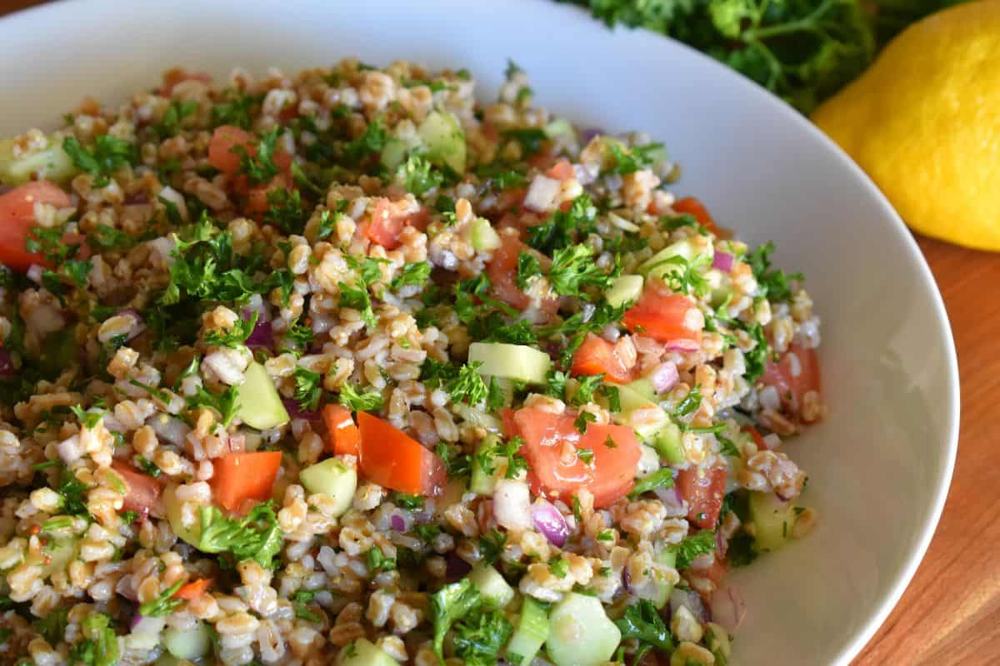

Farro Tabbouleh Recipe

Ingredients:
- Farro (2 cups).
- Chopped parsley (1 cup).
- Fresh chopped tomatoes (1 cup).
- Diced cucumber (1/2 cup)
- Diced onion (1/2 cup)
- Juice of 1 lemon.
Instructions:
Prepare Farro
- Boil water in pot (add salt to taste).
- Rinse two cups farro.
- Add farro to boiling water.
- Cook for approx 30 minutes.
- Drain, let cool to room temperature.
Prepare Tabbouleh
- Combine all ingredients.
- Add salt to taste.